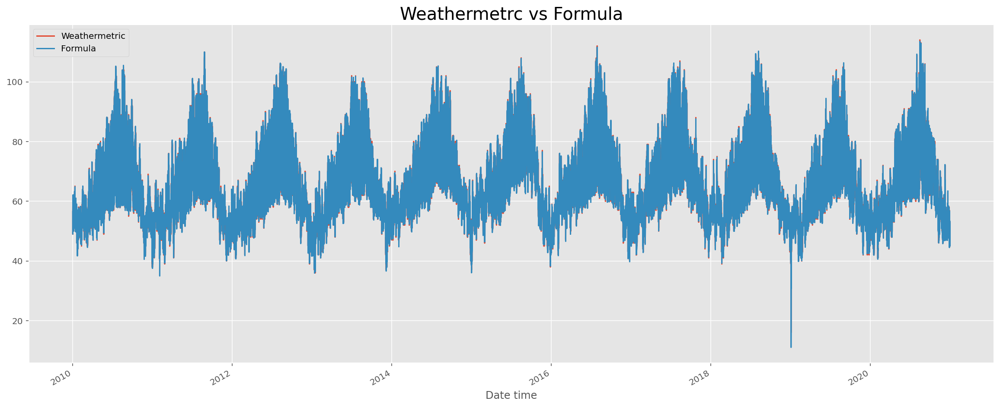

<class 'pandas.core.frame.DataFrame'>
Int64Index: 36162 entries, 5475 to 19024
Data columns (total 5 columns):
# Column Non-Null Count Dtype
--- ------ -------------- -----
0 County 36162 non-null object
1 Date time 36162 non-null datetime64[ns]
2 T 36162 non-null float64
3 RH 36162 non-null float64
4 No 36162 non-null int64
dtypes: datetime64[ns](1), float64(2), int64(1), object(1)
memory usage: 1.7+ MB
How to calculate Heat Index
The Heat Index Equation
The computation of the heat index is a refinement of a result obtained by multiple regression analysis carried out by Lans P. Rothfusz and described in a 1990 National Weather Service (NWS) Technical Attachment (SR 90-23). The regression equation of Rothfusz is
where T is temperature in degrees F and RH is relative humidity in percent. HI is the heat index expressed as an apparent temperature in degrees F. If the RH is less than 13% and the temperature is between 80 and 112 degrees F, then the following adjustment is subtracted from HI:
where ABS and SQRT are the absolute value and square root functions, respectively. On the other hand, if the RH is greater than 85% and the temperature is between 80 and 87 degrees F, then the following adjustment is added to HI:
The Rothfusz regression is not appropriate when conditions of temperature and humidity warrant a heat index value below about 80 degrees F. In those cases, a simpler formula is applied to calculate values consistent with Steadman’s results:
HI < 80 | HI = 0.5 * {T + 61.0 + [(T-68.0)*1.2] + (RH*0.094)} |
In practice, the simple formula is computed first and the result averaged with the temperature. If this heat index value is 80 degrees F or higher, the full regression equation along with any adjustment as described above is applied. The Rothfusz regression is not valid for extreme temperature and relative humidity conditions beyond the range of data considered by Steadman.
plt.style.use('ggplot')plt.figure(figsize=(20, 8))lib2['HI'].plot(label="Weathermetric")result['Heat_Index'].plot(label="Formula")plt.title("Weathermetrc vs Formula",fontsize=20)plt.legend()plt.show()

Conclusions
From the comparison plot we are sure that the calculation’s using formula and using weathermetrics package are similiar.
Weathermetrics:
The algorithm for calculating heat index is adapted for R from the algorithms used by the United States National Weather Service’s online heat index calculator (accessed December 18, 2015). Therefore, results should agree with results from the US National Weather Service online calculator. However, heat index is sometimes calculated using a simpler algorithm. Therefore, heat index values from the function will sometimes differ by one or two degrees compared to other heat index calculators or charts.
References
El Niño and la niña years and intensities. (n.d.). Retrieved November 11, 2021, from https://ggweather.com/enso/oni.htm.
Kozlowski, R. (2020, March 30). How to Calculate a Wind Chill Factor. Retrieved from https://sciencing.com/calculate-wind-chill-factor-5981683.html
Loyalton fire panoramic view 8-15-20 [Digital image]. (n.d.). Retrieved November 10, 2021, from https://data.thespectrum.com/fires/incident/photograph/6975/62/101141/
The Heat Index Equation. (2014, May 28). Retrieved from https://www.wpc.ncep.noaa.gov/html/heatindex_equation.shtml
University Logo - Block Logo [Digital image]. (n.d.). Retrieved October 14, 2021, from https://denison.edu/campus/university-communications/logos-and-branding
Notes:
Description: heat.index creates a numeric vector of heat index values from numeric vectors of air temperature and either relative humidity or dew point temperature.
Arguments:t Numeric vector of air temperatures.dp Numeric vector of dew point temperatures.rh Numeric vector of relative humidity (in %).temperature.metric
Character string indicating the temperature metric of air temperature and dew point temperature. Possible values are ’fahrenheit’ or ’celsius’.output.metric Character string indicating the metric into which heat index should be calculated. Possible values are ’fahrenheit’ or ’celsius’.
round Integer indicating the number of decimal places to round converted value.
Details: Include air temperature (t) and either dew point temperature (dp) or relative humdity (rh). You cannot specify both dew point temperature and relative humidity– this will return an error. Heat index is calculated as NA when impossible values of dew point temperature or humidity are input (e.g., humidity above 100% or below 0%, dew point temperature above air temperature).
Value: A numeric vector of heat index values in the metric specified by output.metric. (If output.metric is not specified, heat index will be returned in the same metric in which air temperature was input,specified by temperature.metric.)
Note: Equations are from the source code for the US National Weather Service’s online heat index calculator.